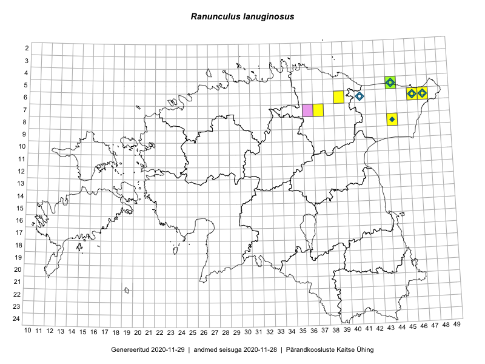

Ranunculus lanuginosus
Uuendatud: 2016-12-02
Kaardile koondatud taksonid: Ranunculus lanuginosus L.

Kaart põhineb 10 vaatlusel. Taksonit on leitud 4 ruudust.
Viited andmebaasikirjetele
- Toomas Kukk, Peedu Saar: 2014-07-09: 08-44: ala
- Toomas Kukk, Eerik Leibak: 2015-04-25: 06-46: ala
- Toomas Kukk, Eerik Leibak: 2015-04-25: 06-46: GPS punkt
- Toomas Kukk, Peedu Saar: 2014-07-11: 08-44: GPS punkt
- Toomas Kukk, Peedu Saar: 2014-07-11: 08-44: GPS punkt
- Meeli Mesipuu: 2015-06-01: 05-44: ala
- Mari Metsoja, Jaak-Albert Metsoja: 2015-07-22: 06-47: ala
- Meeli Mesipuu: 2015-06-01: 05-44: GPS punkt
- Meeli Mesipuu: 2015-06-01: 05-44: GPS punkt
- Meeli Mesipuu: 2015-06-01: 05-44: GPS punkt